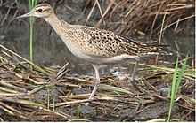
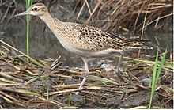

| Little Curlew | |
|---|---|
|  | |
| Conservation status | |
| Binomial name | |
| Numenius minutus Gould, 1841 |
| Little Curlew | |
|---|---|
|  | |
| Conservation status | |
| Binomial name | |
| Numenius minutus Gould, 1841 |
The Little Curlew, Numenius minutus, is a wader in the large bird family Scolopacidae. It is a very small curlew, which breeds in the far north of Siberia. It is closely related to the North American Eskimo Curlew.
This is a strongly migratory species, wintering in Australasia. It is a very rare vagrant to western Europe (including once in Blankenberge, Belgium, in september 2010[2]).
This bird breeds in loose colonies in forest clearings in river valleys. The nest is a ground scrape. It winters inland on grassland, cultivation or near fresh water, mainly in northern Australia but also as far south as St Kilda, South Australia. It is gregarious, forming sizeable flocks. This species feeds by probing soft mud for small invertebrates.
It is mainly greyish brown, including the underwings, with a white belly, and a short, for a curlew, curved bill. It has a head pattern like a Whimbrel, with crown and superciliary stripes. The call is a repetitive whistle.

{kind=link}